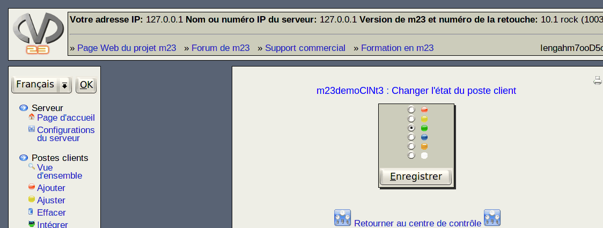

suivant:
Attention
monter:
Administrer des clients
précédent:
Notez
Table des matières
Changer l'état du poste client
Ici, vous pouvez changer l'état du poste client. Ceci peut être utile pour le débogage ou pour des autres raisons.

Sous-sections
Attention
Signification des couleurs des symboles
Travaux
Opérer sur plusieurs postes clients
Notez:
Astuces
root 2018-01-11